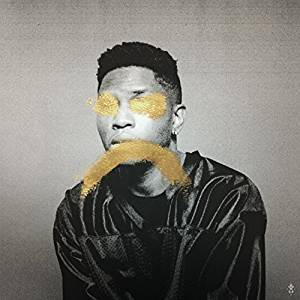
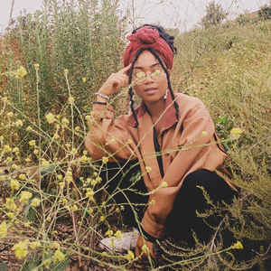
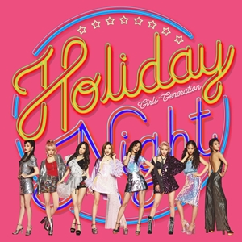
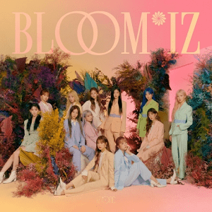

About The Sound
This page is all about the music genres that I listen to a lot. Also, it would be great if you could check the artists out and their works that I'm going to feature in this page (if you don't know them yet). But if you happen to know them, I hope you'll be able to connect, understand, and probably fangirl with me since all the artists that I will recommend are my favorites. I hope you enjoy reading my page. Let's start!
Pop
Pop is a short term for popular music. From its name, songs produced under this category, is any songs that could acquire mass popularity. There are a lot of artists that have made name by releasing pop music like Michael Jackson, Madonna, Beyonce, Ariana Grande, and many more. I remember growing up, I listen to a lot of pop music. It is where my love for music have started. It's also a significant genre because I also love dancing and in a dance routine, we use a lot of pop music.
These are the songs I recommended under the pop category. Please enjoy!Beyonce

"Formation"
Beyonce Knowles-Carter, or Beyonce, is an American singer-songwriter who started her career at an early age. She is first known as part of the legendary girl band called Destiny's Child. In 2003, she started her career as a solo artist. Although she started with a R&B music, she is also considered as a pop musician with numerous hit songs from her discography. She has more than 8 albums releases. Some of her popular songs are 'Single Ladies', 'Crazy in Love', 'Run the World (Girls!)', 'Halo', 'Formation', and many more.
The song 'Formation', which I recommend, is part of her album 'Lemonade'. It was released in April 13, 2016 and the album consists of 13 tracks. The album also has a very serious theme about Black feminism, African-American history and culture, and infidelity and trauma in Black relationships. Lemonade received various nominations and awards.
Bruno Mars

"Chunky"
Peter Hernandez or as we know him as Bruno Mars is a singer-songwriter who rose popularity back in 2010. He featured in 'Nothin' on You' by B.o.B and 'Billionaire' by Travie McCoy. These two songs helped him with success. He has 3 studio albums and 2 EPs under his name. These are some of his gratest hits: 'Just the Way You Are', 'Grenade', 'Marry You', 'Treasure', '24K Magic, 'That's What I Like' to name a few.
The song 'Chunky' is part of his 3rd studio album called '24K Magic'. He released this album in November 18, 2016 with a single also named as '24k Magic'. The album contains 9 tracks and it received multiple nominations and awards from various award shows. For this album, Bruno Mars won 6 awards at the 2018 Grammys including Album of the Year, Record of the Year, and Song of the Year.
Ariana Grande

"Bad Decisions"
Ariana Grande is an American singer and actress. She began her career in broadway musicals. Ariana rose to fame in 2010 because she was part of the popular Nickelodian selevision series Victorious (2010-2013) and Sam & Cat (2013-2014). She released her debut album 'Yours Truly' in 2013. She now has 6 studio albums with the latest one called 'Postions' which was released in October 30, 2020. Some of Ariana's famous songs are 'Almost is Never Enough', 'Problem', 'Bang Bang' with Jessie J and Nicki Minaj, 'Dangerous Woman', 'thank you, next' to name a few.
The song 'Bad Decision' is part of her 'Dangerous Woman'. The album was released in May 16, 2016 and has a total of 11 tracks. The album features appearances of Nicki Minaj, Lil Wayne, Future, and Macy Gray. Dangerous Woman is Grande's longest charting album in Billboard 200. It received multiple nominations including Grammys and received various awards.
R&B
R&B stands for rhythm and blues, it is a music that is rhythmic and has the soulful achings of blue. This type of music is actually my all time favorite. I could listen to it all day if I want to because I can feel the emotions, how musically good the songs are, and the way I could relate to it regardless of what emotion I have while listening. I enjoy those kind of things. I actually have a playlist containing just R&B music from my favorite singers. For this genre, there are a lot of notable artists like Frank Ocean, Usher, Mary J. Blige, Alicia Keys, and many more.
Now these are the songs I recommend under the R&B category. Please enjoy it again!Kehlani
"Bright"
Kehlani is an American singer-songwriter. Before rising to fame, she's part of the group called PopLyfe. They auditioned for America's Got Talent and finished fourth place. After that, she left the group because of managerial and contract dispute. She has 2 studio albums and 3 mixtapes. Her song "Gangsta" was featured on the soundtrack for the August 2016 hit movie Suicide Squad. Kehlani's latest album was released in May 8, 2020 called 'It Was Good Until It Wasn't'.
'Bright' is part of her 2nd Mixtape called 'You Should Be Here' which was released in April 28, 2015 contains 15 songs. The album features Lexii Aliijai, Chance the Rapper, and BJ the Chicago Kid. It peaked the Billboard 200 at 36.
Gallant

"Weight in Gold"
Gallant, or Christopher Joseph Gallant III in real life, released his first EP called Zebra in 2014. He has 2 albums under his name. His latest album is called 'Sweet Insomia' which was released in October 25, 2019.
'Weight in Gold' is a track under the album 'Ology' which was released in April 6, 2016. It is the debut album of Gallant. The album consists of 16 tracks and it was nominated for a Grammy Award for Best Urban Contemporary Album, at the 59th Annual Grammy Awards in 2017.
UMI

"Breathe"
UMI is an American singer and songwriter born in Seattle, Washington. She dropped college in 2019 to pursue music. UMI has been releasing singles since 2017 and she now has 4 EPs under her name. Her lates EP is called 'Introspection' released in June 21, 2020. One of her most famous song is called 'Remember Me' released in 2018 and has more than 80 million streams on Spotify.
The song 'Breathe' is a track under her 3rd EP called 'Love Language'. The EP has 4 tracks which was released in October 30, 2019.
K-Pop
This is just the same as the pop genre about, but for this genre, it is called K-Pop or Korean Popular music because the artists and the language used is korean. It started around late 1990s and ever since it grew bigger from what we know right now. I discovered K-Pop around 2010-2012. Myx was popular back then, it is a music channel here in the Philippines, that's where I first heard k-pop. Until now, I'm still listening to it and have been a fan of some k-pop groups, mostly girl groups. Important artists from this genre are Girls' Generation, Big Bang, Wonder Girls, Red Velvet, Twice, Blackpink, BTS, and many more.
These are the songs I recommend under the K-Pop category. Again, please enjoy it!Girls' Generation

"All Night"
Girls' Generation is a South Korean girl group under SM Entertainment debuted in August 5, 2007. The title of their debut single is called 'Into The New World'; the song now hold a significant meaning in the industry as it was used in different protests in relation with corruption, LGBTQ+, #MeToo movement, and many more. They helped paved the way for girl groups with an industry dominated by boy groups. These are some of their iconic songs: 'Gee', 'Genie', 'Oh!', The Boys', 'I Got A Boy', and many more. They have 9 full albums and 4 EPs.
The song 'All Night' is under their 6th full album called 'Holiday Night'. They released the album in August 7, 2017 with 10 songs. This album is for their 10th anniversay and it actually has 2 title tracks called 'Holiday' and 'All Night'. Current the band is on hiatus and focusing on their individual careers, but reunion is possible in the right time as the members said.
Red Velvet

"Psycho"
Red Velvet is a South Korean girl group formed in August 1, 2014 under SM Entertainment. They debuted with a digital single called 'Happiness'. They later released another single called 'Be Natural'. And in March 2015, another member joined them named Yeri. They are a 5 membered group. Red Velvet has 2 full studio albums, 1 compilation album, and 11 EPs. These are some of their greatest hits: 'Ice Cream Cake', 'Dumb Dumb', 'Russian Roulette','Red Flavor', 'Bad Boy', and 'Psycho'.
'Psycho' is under the compilation album called 'The Reve Festival: Finale', it is also the title track; this is their latest album as of the moment. The album consists of 16 tracks which was released in December 23, 2019. 'Psycho' is now their most streamed song. It received numerous nominations and awards.
IZ*ONE

"Fiesta"
IZ*ONE is a Korean-Japanese girl group formed in August 31, 2018 through a reality program 'Produce 48'. But they officially debuted in October 29, 2018 with an EP named 'COLOR*IZ' and a title track called 'La Vie En Rose'. They will be promoting for 2 and a half years. They have 2 full album and 7 EPs under their name.
The song 'Fiesta' is under their first full album called 'BLOOM*IZ'. The album was released in February 17, 2020 with 12 tracks. The album changed a lot of things including this one: it became the best-selling album for a girl group before it got surpassed by Blackpink. The song also won 4 bonsang awards despite being in a tough competition with other senior groups in the industry.